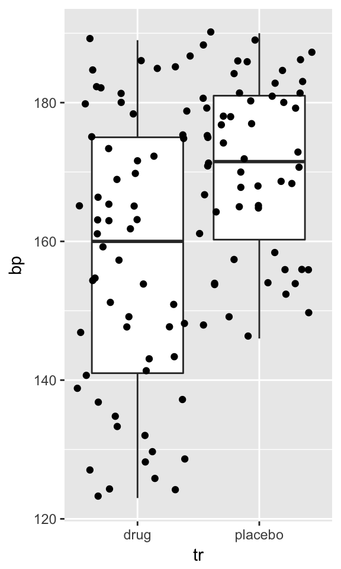

A function is a piece of code to carry out a specified task, e.g. calculate mean, split data frame. It may accept arguments (or not) and it may return zero to more values or objects.
General form of R function is following:
function(argslist) expr
Where, argslist is either empty or one to more name or name=expression terms. When calling a function you can specify arguments by position, by complete name, or by partial name.
Example function with no arguments, doing only one thing:
dedication <- function() {
cat("And Pierce Brosnan how dare you prescribe\n
Sad grief and bed wet pills")
}Above defined function prints cryptic lyrics (Credit: ME Smith)
dedication()## And Pierce Brosnan how dare you prescribe
##
## Sad grief and bed wet pillsBut we can tune above function to insert your computer’s username into that line instead of that actor:
not_medication <- function() cat(paste("And", system("whoami",T), "how dare you prescribe\n
Sad grief and bed wet pills"))not_medication()## And taavi how dare you prescribe
##
## Sad grief and bed wet pills{} must be used to enclose the body of the function.Onliners like this does not need braces:
plusone <- function(x) x + 1
plusone(1)## [1] 2Some arguments have default values specified, as shown below. Arguments without a default must have a value supplied for the function to run. You do not need to provide a value for those arguments with a default, as the function will use the default value:
sum_stat <- function(x, f = "mean"){
do.call(f, list(x))
}
v <- rnorm(10)
sum_stat(v) # by default this function calculates mean## [1] -0.07936577But we can also calculate median, if we change f argument:
sum_stat(v, f = "median") # ## [1] -0.2621893The addition of ..., or ellipsis, in the function definition allows other arguments to be passed into the function, and passed onto to another function:
# Let's redifine sum_stat function with ellipsis to pass additional arguments to summary function
sum_stat2 <- function(x, f = "mean", ...){
do.call(f, list(x, ...)) # do.call constructs and executes a function call from a function and a list of arguments to be passed to it
}
v2 <- c(NA, v, NA, NA)
sum_stat2(v2) # NA-s start to give trouble, as mean fun has na.rm = FALSE argument## [1] NAsum_stat2(v2, na.rm = TRUE) # here we pass na.rm = TRUE to our function and voila!## [1] -0.07936577By default, function returns result from last expression:
logit <- function(p) {
odds <- p/(1-p)
log(odds)
}
logit(0.5)## [1] 0Importantly, objects that are created within the function are local to the environment of the function. If you direct your last expression into an object inside function, you need to explicitly return() the value of that object:
# look what happens
logit2 <- function(p) {
odds <- p/(1-p)
log_odds <- log(odds) # last expression's value is assigned to log_odds object inside function
}
logit2(0.5) # nothing is returned
## use of return()
logit3 <- function(p) {
odds <- p/(1-p)
log_odds <- log(odds) # last expression's value is assigned to log_odds object inside function
return(log_odds) # return object log_odds value
}
logit3(0.5) ## [1] 0## use of return()
logit4 <- function(p) {
odds <- p/(1-p)
log_odds <- log(odds) # last expression's value is assigned to log_odds object inside function
return(list(odds = odds, log_odds = log_odds)) # return two objects from function environment as named list
}
logit4(0.5) ## $odds
## [1] 1
##
## $log_odds
## [1] 0lapply()/sapply() takes a function, applies it to each element in a list/vector, and returns the results in the form of a list. Its easy to use when you want to calculate eg. mean of each list element. But what if you need to do something more specific with your data:
let <- c("a","z","x","u","b") # we have a list of letters
sapply(let, function(x) grep(x, letters)) # we need to know the position of each letter in alphabet## a z x u b
## 1 26 24 21 2magrittr allows to use %>% piping operator not only to produce values but also to produce functions. This kind of functional sequences denote input with . dot:
library(magrittr)##
## Attaching package: 'magrittr'## The following object is masked from 'package:tidyr':
##
## extractmae <- . %>% abs %>% mean(na.rm = TRUE)
mae(rnorm(10))## [1] 0.6558839This is similar to following function:
mae <- function(x) {
mean(abs(x), na.rm = TRUE)
}Quite common use case of these functional sequences is inside lapply/sapply:
library(dplyr)
library(readr)
library(reshape2)
data <- paths-to-csv-files %>% lapply(. %>% read_csv %>% melt)It’s cool that you can subset these functional sequences and use only parts of them when necessary:
mae[2](rnorm(5))## [1] -0.7157949mae[1](rnorm(10))## [1] 0.78894137 1.64903064 0.55045024 0.06465303 0.33275051 0.69121613
## [7] 0.03368973 1.48761748 0.30999737 2.73853197Let’s create function to calculate standardised effect size, Cohen’s d. First let’s simulate some toy data of blood pressure readings from patients with high systolic bp, treated either with drug or placebo:
library(ggplot2)
probs_h <- pnorm(70:190, 150, 7)
probs_n <- pnorm(70:190, 130, 7)
m <- data.frame(bp = c(sample(70:190, 56, replace = T, prob = probs_h),
sample(70:190, 60, replace = T, prob = probs_n)),
tr = c(rep("placebo", 56), rep("drug", 60)))This is how our dummy dataset looks like:
ggplot(m, aes(tr, bp)) + geom_boxplot() + geom_jitter(width = 0.5)
Cohen’s d is defined as the difference between two means divided by a standard deviation for the data:
\[d = \frac{\bar{x}_1-\bar{x}_2}{s}\]
\(s\) is pooled standard deviation:
\[s = \sqrt{\frac{(n_1-1){s_1}^2+(n_2-1){s_2}^2}{n_1+n_2-2}}\]
Using above equations, we define function:
cohensd <- function(x1, x2){ # '{}' because our function is spread on multiple lines
n1 <- length(x1) - 1
n2 <- length(x2) - 1
# mean difference
md <- abs(mean(x1, na.rm = T) - mean(x2, na.rm = T))
# common sd
s <- n1 * var(x1, na.rm = T) + n2 * var(x2, na.rm = T)
s <- s/(n1 + n2)
s <- sqrt(s)
# calculate Cohen's d
md/s # last expression's result is returned
}Cohen’s d is interpreted that d values of 0.2, 0.5, and 0.8 represent small, medium, and large effect sizes respectively:
bp <- split(m$bp, m$tr) # to split data frame into two vectors
cohensd(bp$placebo, bp$drug) # to input treatment groups as vectors## [1] 0.7936937Because our function arguments are two vectors x1 and x2 and we had data frame in the long format, we had to split data frame into vectors. [Can we embed these two vectors into data frame in the long format (two cols - one col per vector)?]
We can try to wrap this function into another function to use our data frame:
cohens_d <- function(data, values, group){
v <- split(data[[values]], data[[group]])
cohensd(v[[1]], v[[2]])
}
save(cohens_d, file = "lib/cohens_d.R") # save your function into lib foldercd <- cohens_d(m, "bp", "tr")
cd## [1] 0.7936937Now we can create function to insert word explaining the size of the effect into text:
mansplain_cohensd <- function(x) {
if(x<=0.2) return("small")
if(x>=0.2&x<=0.5) return("medium")
if(x>0.5&x<Inf) return("large")
if(x==Inf) return("cosmos")
}
cdv <- mansplain_cohensd(cd)
cdv## [1] "large"Seems that the standardised effect size for the drug treatment effect on blood pressure is **` r round(cd, 2)`**, which means it's **` r mansplain_cohensd(cd)`**.Whitch produces following output:
Seems that the standardised effect size for the drug treatment effect on blood pressure is 0.79, which means it’s large.
lib in your project’s dirload(lib/cohens_d.R)Good function is: